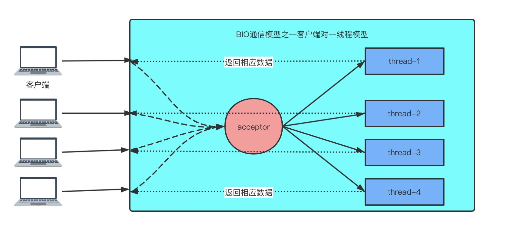
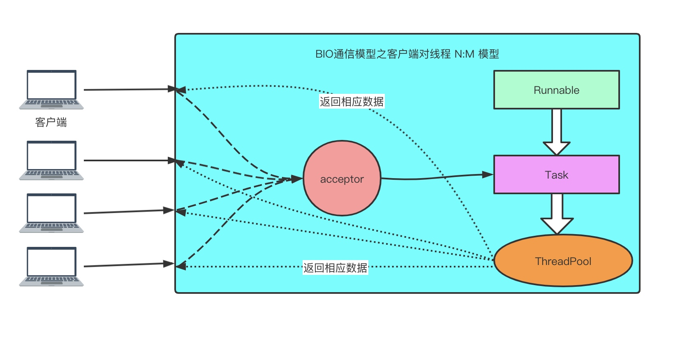

首先看一下BIO通信模型示意图，如下图所示：


网络编程的基本模型是 Client/ Server模型,也就是两个进程之间进行相互通信,其中服务端提供位置信息(绑定的IP地址和监听端口),客户端通过连接操作向服务端监听的地址发起连接请求,通过三次握手建立连接,如果连接建立成功,双方就可以通过网络套接字(Socket)进行通信。
在基于传统同步阻塞模型开发中, Serversocket负责绑定IP地址,启动监听端口Socket负责发起连接操作。连接成功之后,双方通过输入和输出流进行同步阻塞式通信。
采用 BIO 通信模型的服务端，通常由一个独立的 Acceptor 线程负责监听客户端的连接，它接收到客户端连接请求之后为每个客户端创建一 个新的线程进行链路处理没处理完成后，通过输出流返回应答给客户端，线程销毁。即典型的一请求一应答模型。
该模型最大的问题就是缺乏弹性伸缩能力，当客户端并发访问量增加后，服 务端的线程个数和客户端并发访问数呈 1:1 的正比关系，Java 中的线程也是比较 宝贵的系统资源，线程数量快速膨胀后，系统的性能将急剧下降，随着访问量的 继续增大，系统最终就不堪重负挂掉了。
为了改进这种一连接一线程的模型，我们可以使用线程池来管理这些线程， 实现 1 个或多个线程处理 N 个客户端的模型(但是底层还是使用的同步阻塞 I/O)， 通常被称为“伪异步 I/O 模型“。
我们看一下 返回应答时间过长会引起的级联故障：
(1)服务端处理缓慢,返回应答消息耗费60s,平时只需要10ms
(2)米用伪异步1/O的线程正在读取故障服务节点的响应,由于读取输入流是阻塞的,它将别阻塞 60s。
(3)假如所有的可用线程都被故障服务器阻塞,那后续所有的1/O消息都将在队列中排队。
(4)由于线程池采用阻塞队列实现,当队列积满之后,后续入队列的操作将被阻塞
(5)由于前端只有一个 Accptor线程接收客户端接入,它被阻塞在线程池的同步阻塞队列之后,新的客户端请求消息将被拒绝,客户端会发生大量的连接超时。
(6)由于几乎所有的连接都超时,调用者会认为系统已经崩溃,无法接收新的请求消息。
代码如下：
import java.io.*;
import java.net.InetSocketAddress;
import java.net.ServerSocket;
import java.net.Socket;
/**
* BIO 服务端
**/
public class Server {
public static void main(String[] args) throws IOException {
ServerSocket serverSocket = new ServerSocket();
serverSocket.bind(new InetSocketAddress(8081));
System.out.println("server 启动了");
while (true) {
// 在这里会阻塞接受连接请求
Socket accept = serverSocket.accept();
// 这里可以换成线程池实现用户与线程 N:M 的伪异步IO模型
// 但是如果发生读取数据较慢时，大量并发的情况下，其它接入的消息只能一直等待，这是此模型的最大弊端
new Thread(new ServerTask(accept)).start();
}
}
private static class ServerTask implements Runnable {
private Socket socket = null;
public ServerTask(Socket socket) {
this.socket = socket;
}
@Override
public void run() {
try {
InputStream inputStream = socket.getInputStream();
OutputStream outputStream = socket.getOutputStream();
ObjectInputStream objectInputStream = new ObjectInputStream(inputStream);
ObjectOutputStream objectOutputStream = new ObjectOutputStream(outputStream);
String s = objectInputStream.readUTF();
System.out.println("server accept " + s);
objectOutputStream.writeUTF("有胆你就来");
objectOutputStream.flush();
} catch (IOException e) {
e.printStackTrace();
}
}
}
}
import java.io.IOException;
import java.io.ObjectInputStream;
import java.io.ObjectOutputStream;
import java.net.InetSocketAddress;
import java.net.Socket;
/**
* 请求客户端
**/
public class Client {
public static void main(String[] args) throws IOException {
Socket socket = new Socket();
socket.connect(new InetSocketAddress("127.0.0.1",8081));
ObjectOutputStream outputStream = new ObjectOutputStream(socket.getOutputStream());
ObjectInputStream inputStream = new ObjectInputStream(socket.getInputStream());
outputStream.writeUTF("老子来逛逛");
outputStream.flush();
System.out.println(inputStream.readUTF());
}
}
JDK对NIO的支持与演进
由于上面几点阻塞IO引起的问题，java 在JDK1.4的时候，随着JSR-51的发布，引入了NIO，它新增了一个java.nio包。提供了很多进行一步IO开发的API和类库。主要的类和接口如下：
- 进行异步I/O操作的缓冲区 Bytebuffer等;
- 进行异步1O操作的管道Pipe
- 进行各种1/O操作(异步或者同步)的 Channel,包括 ServerSocketChannel和SocketChannel
- 多种字符集的编码能力和解码能力
- 实现非阻塞1/O操作的多路复用器 selector
- 基于流行的Perl实现的正则表达式类库;
- 文件通道 FileChannel
虽然NIO类库促进了基于java 的一步非阻塞编程的发展和应用，但是，它仍然有不完善的地方，主要问题如下：
- 没有统一的文件属性
- API能力比较弱，例如目录的级联创建和递归遍历，需要自己实现
- 底层存储系统的一些高级API无法使用
- 所有的文件操作都是同步阻塞调用，不支持异步文件读写操作
之后随着 JDK1.7 正式发布，NIO升级为成我们口中的额 NIO2.0 ,它是有JSR-203演进而来，主要提供了如下三个方面的改进：
- 提供能够批量获取文件属性的API，这些API具有平台无关性，不予特性的文件系统相耦合
- 提供AIO功能，支持基于文件的异步IO操作和针对网络套接字的异步操作
- 完成JSR-51定义的通道功能，包括对配置和多播数据报的支持等。